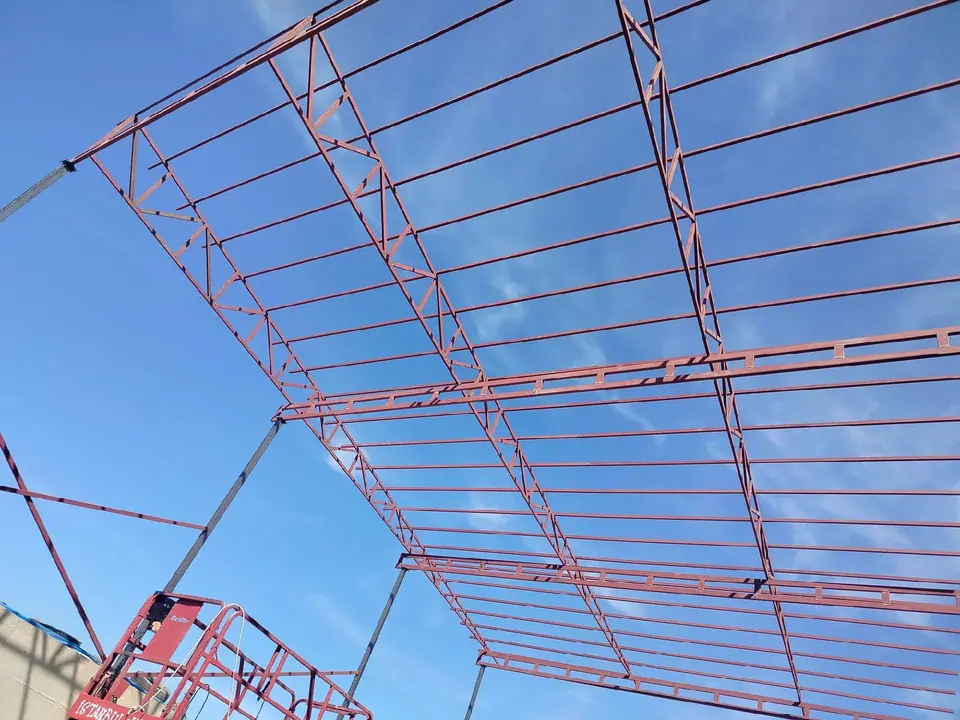
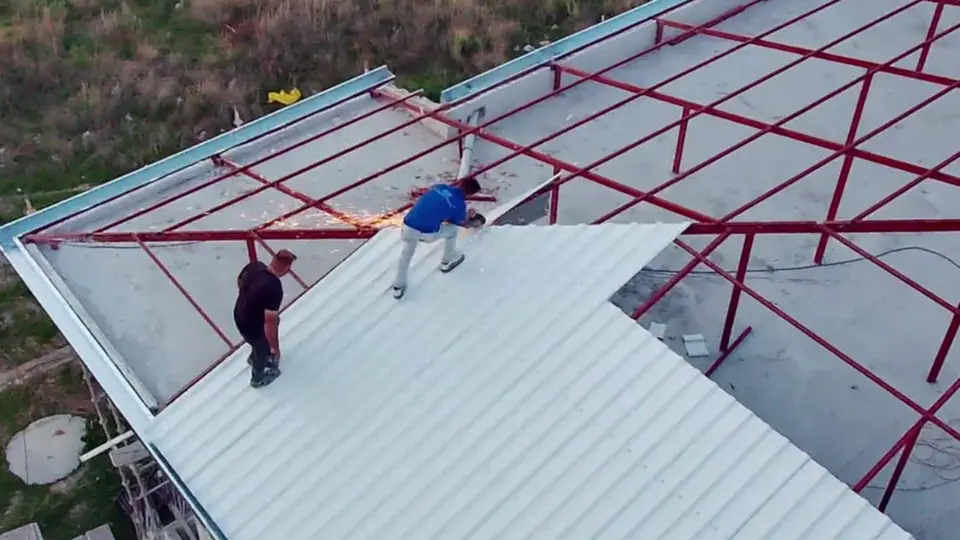

Demir Doğrama
Pencere demiri, demir kapı ve özel ölçü metal doğrama imalatı.

Demir, çelik ve metal imalatında projeye özel çözümler. Keşif, ölçülendirme ve teklif için bizimle iletişime geçin.
Kapı ve korkuluktan çelik çatıya, hangardan seraya kadar 18 hizmet kategorisinde projeye özel çözümler.
Pencere demiri, demir kapı ve özel ölçü metal doğrama imalatı.
Kolon, kiriş ve kafes kiriş sistemleriyle taşıyıcı çelik yapılar.
Raylı ve konsol sürgülü bahçe, site ve iş yeri kapıları.
Balkon, merdiven ve teras için metal ve ferforje korkuluklar.
İmalat, sahada alınan ölçülere ve yapının gerçek durumuna göre planlanır.
Hazır kalıp yerine ihtiyaca, mimariye ve bütçeye uygun detaylar önerilir.
Malzeme, yüzey koruma ve montajın teklife dahil olup olmadığı baştan netleştirilir.
Kıyı, sanayi veya kırsal alan koşullarına uygun malzeme ve boya sistemi önerilir.
Aşağıdaki görseller tamamlanan ve devam eden çalışmalarımızdan alınmıştır.


Sundurma ve Pergola · Garaj ve Otopark Sistemleri · Çelik Konstrüksiyon


Ferforje · Bahçe Kapısı ve Giriş Sistemleri · Çelik Sürgülü Kapı



Sundurma ve Pergola · Çelik Konstrüksiyon · Garaj ve Otopark Sistemleri
Müstakil ev, villa ve apartmanlarda kapı, pencere demiri, korkuluk, çatı ve sundurma.
Hangar, depo, tesis çatısı, platform, merdiven ve ağır hizmet kapıları.
Ahır, kümes, sera, ürün deposu ve ekipman sundurmaları.
Dükkan kepenkleri, otel-restoran korkulukları, pergola ve giriş kapıları.
Adresimiz Aliağa'da. Kuzeyden yarımadaya, merkezden iç bölgelere kadar İzmir'in 30 ilçesinden keşif talebi alıyoruz.
WhatsApp veya telefonla işinizi kısaca anlatın; varsa fotoğraf ve yaklaşık ölçüleri paylaşın.
Gerekli işlerde yerinde keşif yapılır, kesin ölçüler alınır ve saha koşulları incelenir.
Malzeme, yüzey koruma ve montaj kapsamı netleştirilerek teklif hazırlanır.
Onay sonrası parçalar ölçüye göre kesilir, kaynaklanır, temizlenir ve boyanır.
Sahada montaj yapılır, son kontroller tamamlanarak iş teslim edilir.
WhatsApp veya telefonla işinizi anlattıktan sonra, gerekli durumlarda yerinde keşif için uygun gün belirlenir. Keşifte ölçüler alınır, saha koşulları incelenir ve malzeme seçenekleri konuşulur.
Her iş ölçüsü, malzemesi ve montaj koşullarıyla farklıdır. Bu nedenle sabit liste fiyatı yerine; metraj, profil kalınlığı, yüzey koruma tipi ve montaj kapsamına göre projeye özel teklif hazırlanır.
İşin türüne göre kutu profil, I/U profiller, lama, dolu demir, trapez sac ve sandviç panel gibi malzemeler kullanılır. Dış ortam işlerinde astar ve boya sistemi veya galvaniz kaplama seçenekleri değerlendirilir.
Adresimiz Aliağa'dadır ve İzmir'in tüm ilçelerinden keşif talebi alınır. Uzak ilçelerde keşif günü, iş kapsamı netleştikten sonra önceden planlanır.
Evet. Kapı, korkuluk, pencere demiri, çatı ve sundurma gibi işlerin tamamı yerinde alınan ölçüye göre üretilir; standart dışı ölçüler için de imalat yapılabilir.
İmar, ruhsat ve kat malikleri kararı gibi izinler yapı sahibinin sorumluluğundadır. Çatı, çelik yapı ve sundurma gibi işlerde başlamadan önce ilgili belediyeden bilgi almanızı öneririz.
Fotoğraf ve yaklaşık ölçülerinizi gönderin; keşif ve teklif sürecini birlikte planlayalım.